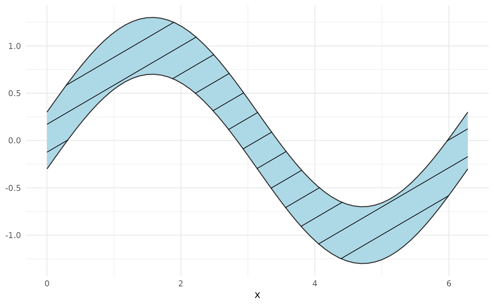
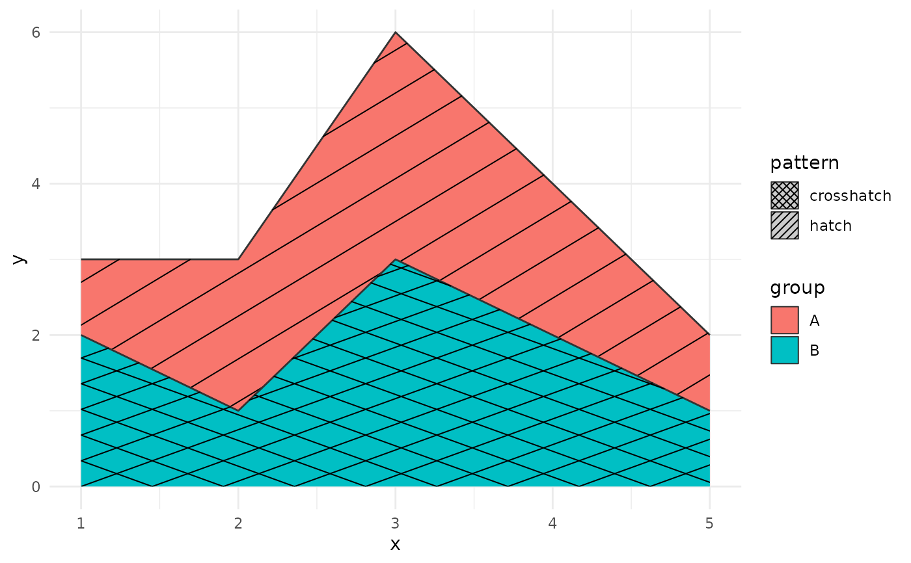

Drop-in replacements for ggplot2::geom_ribbon() and ggplot2::geom_area()
that add a pattern aesthetic. Patterns are clipped to the ribbon polygon
using the same device-independent in-R geometry as geom_polygon_pattern().
Usage
geom_ribbon_pattern(
mapping = NULL,
data = NULL,
stat = "identity",
position = "identity",
...,
outline.type = "both",
na.rm = FALSE,
show.legend = NA,
inherit.aes = TRUE
)
geom_area_pattern(
mapping = NULL,
data = NULL,
stat = "identity",
position = "stack",
...,
outline.type = "upper",
na.rm = FALSE,
show.legend = NA,
inherit.aes = TRUE
)Arguments
- mapping
Aesthetic mappings created by
ggplot2::aes().- data
Data frame.
- stat
Statistical transformation. Default
"identity".- position
Position adjustment. Default
"identity"forgeom_ribbon_pattern(),"stack"forgeom_area_pattern().- ...
Other arguments passed to the layer.
- outline.type
Which sides of the ribbon to draw. One of
"both"(default),"upper","lower", or"full".- na.rm
If
FALSE(default), missing values are removed with a warning.- show.legend
Logical. Should this layer be included in the legend?
- inherit.aes
If
FALSE, overrides the default aesthetics.
Pattern aesthetics
In addition to all aesthetics accepted by ggplot2::geom_ribbon(), these
geoms accept:
patternCharacter name of the pattern. One of
"none","hatch","crosshatch","horizontal","vertical","dots","weave", or a custom pattern registered withregister_pattern(). Each base pattern (except"none") also has_denseand_sparsevariants (e.g."hatch_dense","dots_sparse") for pre-set tighter or looser spacing.pattern_colourColour of pattern lines/dots. Default
"black".pattern_linewidthLine width for line-based patterns. Default
1.pattern_spacingSpacing between pattern elements in millimetres. Default
5. Smaller values produce denser patterns; larger values produce sparser patterns. Named density variants (e.g."hatch_dense") bake in a pre-set spacing multiplier but still respect explicitpattern_spacingvalues.pattern_angleAngle in degrees for hatch patterns. Default
45.pattern_sizeDot radius in millimetres for the
"dots"pattern. Default0.5.
Limitations
orientation = "y" (horizontal ribbons/areas) is not supported for the
pattern overlay. The base ribbon renders correctly, but the pattern is
silently skipped.
NA gaps in the ribbon data collapse into the surrounding polygon rather than producing separate pattern segments.
Examples
library(ggplot2)
# Confidence band around a sine wave
x <- seq(0, 2 * pi, length.out = 60)
df <- data.frame(x = x, ymin = sin(x) - 0.3, ymax = sin(x) + 0.3)
ggplot(df, aes(x, ymin = ymin, ymax = ymax)) +
geom_ribbon_pattern(pattern = "hatch", fill = "lightblue") +
theme_minimal()

# Stacked area chart with patterns
df2 <- data.frame(
x = c(1:5, 1:5),
y = c(1, 2, 3, 2, 1, 2, 1, 3, 2, 1),
group = rep(c("A", "B"), each = 5),
pattern = rep(c("hatch", "crosshatch"), each = 5)
)
ggplot(df2, aes(x, y, fill = group, pattern = pattern)) +
geom_area_pattern(position = "stack") +
scale_pattern_identity(guide = "legend") +
theme_minimal()
